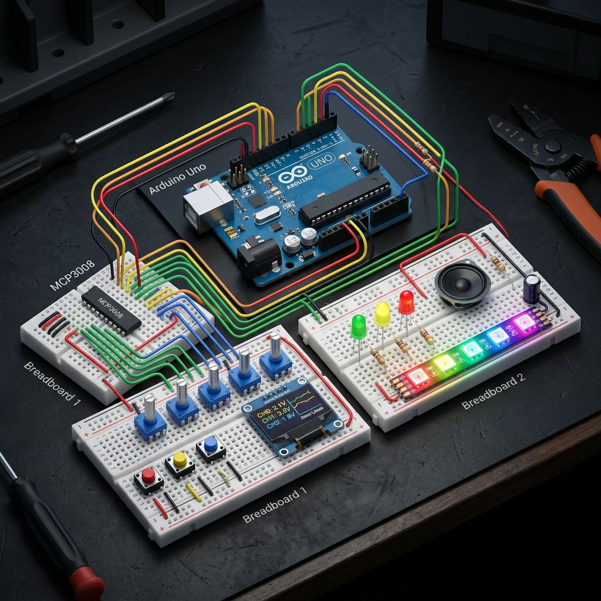

Guide de Câblage de Référence – Prototype de Jeu Complet (1 Arduino Uno)

Pour éviter tout court-circuit et simplifier le débogage, effectue les branchements dans cet ordre précis :
| Broche Arduino | Type de Signal | Composant Connecté | Broche du Composant | Résistance Requise |
|---|---|---|---|---|
| GND | GND | Masse Commune (Tous) | Rails bleus des breadboards | Aucune |
| 5V | 5V VCC | MCP3008, Potentiomètres, Ruban LED | VCC / VDD / VREF | Aucune |
| 3.3V | 3.3V VCC | Écran OLED SSD1306 | VCC | Aucune |
| A4 | I2C SDA | Écran OLED | SDA | Aucune |
| A5 | I2C SCL | Écran OLED | SCL | Aucune |
| D2 | Input (Pull-up) | Bouton 1 (Sélection Zone) | Patte A (Patte B sur GND) | Aucune |
| D3 | Output (NeoPixel) | Ruban LED 5V Adressable | Fil DIN (Données) | 330Ω (Recommandée) |
| D4 | SPI Soft CS | MCP3008 | Pin 10 (CS/SHDN) | Aucune |
| D5 | Output (Digital) | LED de Statut Verte (Stable) | Anode (+) (Cathode sur GND) | 220Ω (Série) |
| D6 | Output (Digital) | LED de Statut Jaune (Warning) | Anode (+) (Cathode sur GND) | 220Ω (Série) |
| D7 | SPI Soft CLK | MCP3008 | Pin 13 (CLK) | Aucune |
| D8 | SPI Soft DIN | MCP3008 | Pin 11 (DIN) | Aucune |
| D9 | Output (PWM) | Haut-parleur (Speaker) | Fil Rouge (Fil Noir sur GND) | 220Ω (Série) |
| D10 | Output (Digital) | LED de Statut Rouge (Blackout) | Anode (+) (Cathode sur GND) | 220Ω (Série) |
| D11 | Input (Pull-up) | Bouton 2 (Toggle Zone ON/OFF) | Patte A (Patte B sur GND) | Aucune |
| D12 | SPI Soft DOUT | MCP3008 | Pin 12 (DOUT) | Aucune |
| D13 | Input (Pull-up) | Bouton 3 (Reset / Start Jeu) | Patte A (Patte B sur GND) | Aucune |